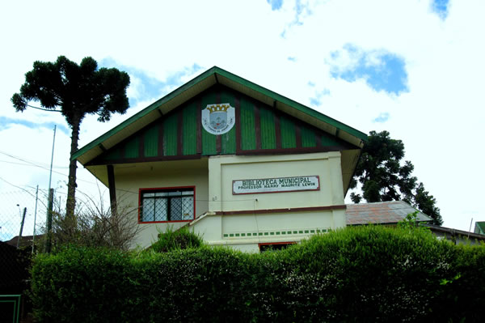

História
A Biblioteca Municipal de Campos do Jordão possui um acervo de 20 mil volumes, em todas as áreas do conhecimento humano. Recebemos diariamente os jornais O Vale e O Estado de São Paulo além de revista semanais.
Possuimos uma videoteca que abrange filmes clássicos, concertos, shows, óperas, etc. e um auditório para eventos multimídia além de uma sala de informática com acesso a internet.
Desenvolvemos atividades de filatelia e xadrez e todos os meses acontecem acontecem debates literários, noites de poesias, cineclube e outros eventos culturais.
A Biblioteca possui a melhor coleção de livros de arte do Vale do Paraíba, segundo a Secretaría Estadual de Cultura. Isso faz com que alunos da Graduação das universaidades região venham fazer suas pesquisas, TCC e teses em nossa casa de cultura.